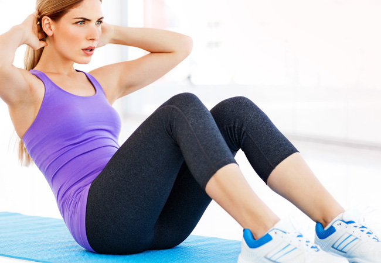
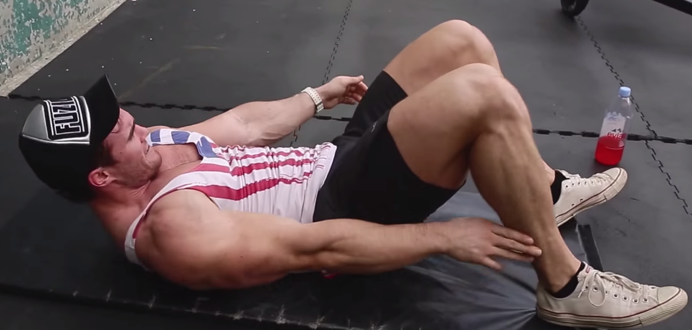
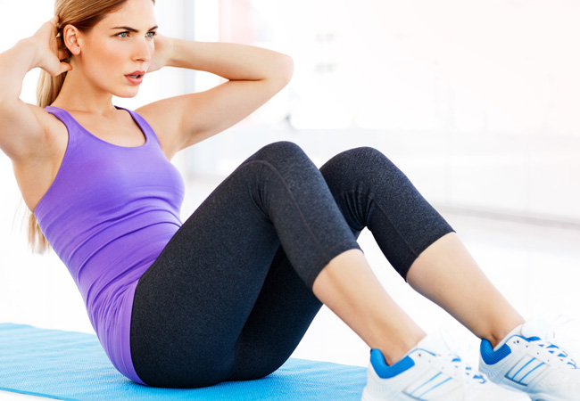
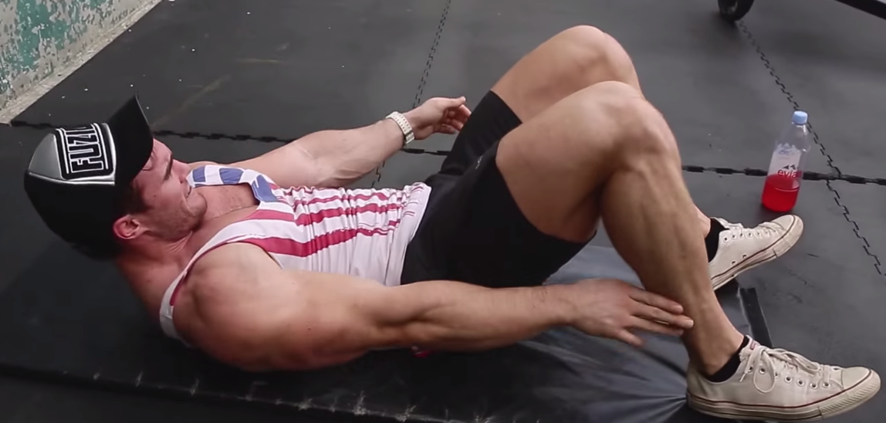

Abdominals 103
 



Crunches X Sit-up With Twist X Leg Lifts X Sit-Up X Oblique Lean
(3 sets | 10x5/5x10x10x20)
Info: There will be 3 sets. Perform all exercise back to back immediately. Perform 10 crunches, 5 sit-ups with an oblique twist on each side, 10 leg lifts, 10 sit-ups, and 10 oblique leans on each side. Rest for 120 seconds then repeat.
Form: For the crunches, lay flat on the ground with your but bend your knees. Place your hands on your chest and slightly bend at the abdominals, focusing on the top of the abs.
For the sit-up with a twist, lay flat on the ground but with a bend in your knees. Sit up and bring your right side of the body to your left knee, or vice-versa.
For the leg raises, lay flat on the ground with your feet together. Keeping your hands on your abs, lift your legs up and point them straight in the air. When they are straight lift your glutes off the ground using your core.
For the sit ups lay on the floor but bend your knees. Arch your back and then sit up bending at the abdominals.
For the oblique lean, lay flat on the floor, bend your knees, and place your hands at your sides. Using your obliques, move your torso back and forth in order to touch your hands to your heels while your torso remains on the ground.